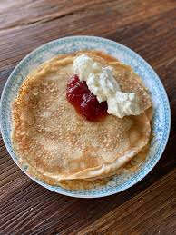

Gör traditionella tunna pannkakor genom att blanda mjöl, mjölk och ägg till en jämn smet. Stek till tunna och smarriga pannkakor och servera med en söt sylt.

Ingredienser
- 2 ½ dl vetemjöl
- ½ tsk salt
- 6 dl mjölk
- 3 ägg
- 3 msk smör
- Sylt, bär eller frukt
Gör så här
- Blanda mjöl och salt.
- Vispa i mjölk och ägg till slät smet.
- Stek tunna pannkakor och servera.